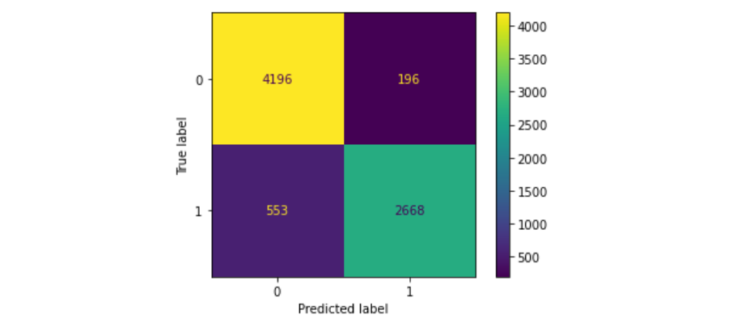

# ground truth from the training data
train_true = [int(x) for x in tok_ds['labels']]
# model predictions on the training data
train_preds = trainer.predict(tok_ds).predictions.astype(float)
train_preds = [ 1 if element > 0.6 else 0 for element in train_preds.squeeze()]What started out as a simple exercise to visualize model performance using a confusion matrix revealed that the training set contains lots of incorrectly labeled tweets, and that my trained model actually performed better than the score suggests.
After I had published my first blog post on “Natural Language Processing with Disaster Tweets”, I realized that I had forgotten one element I planned to incorporate into the notebook: I wanted to visualize the model performance using a confusion matrix. Since the implementation was pretty straightforward, the subsequent data analysis will be the real content of this blog post.
Implementing the Confusion Matrix
To create the confusion matrix, we need the ground truth from the training data and the predictions from the model on the training data:
Leveraging scikit-learn, here is how I created the confusion matrix
import matplotlib.pyplot as plt
from sklearn.metrics import confusion_matrix, ConfusionMatrixDisplay
cm = confusion_matrix(train_true, train_preds, labels=[0, 1])
disp = ConfusionMatrixDisplay(confusion_matrix=cm, display_labels=[0, 1])
disp.plot()
plt.show()
The confusion matrix above displays the best training result I could get using all the methods in my previous blog post/notebook: Training on the model microsoft/deberta-v3-large with 2 epochs at batch size 4 and afterwards another epoch on the full training set. The model nicely classifies many tweets correctly, but there are still 196 false-positives and 553 false negatives.
This results in a surprisingly high F1-score of 0.87691 - a lot higher than any of the F1 scores in my submissions.
Similar to the approach taken in lesson 2 (where we used the first trained model to find the picture which had the top losses), I reviewed at the incorrectly labeled tweets and found surprising results.
Data Analysis / Discovering Mislabeled Tweets
Inspecting the false positives and the true positives revealed the following:
- The false positives (the model classified a tweet as disaster, but there was none), were indeed mostly incorrect predictions made by the model - even though there is quite some room for interpretation.
- The false negatives (the model classified a tweet as non-disaster, but there was one), however, revealed a significant number of mislabeled tweets.
The following tweets for sure are no disaster tweets, nonetheless they are labeled as disasters in the training data:
| id | Tweet | label | pred |
|---|---|---|---|
| 443 | Short Reading Apocalypse 21:1023 In the spirit the angel took me to the top of an enormous high mountain and… | 1 | 0 |
| 794 | Chevrolet : Avalanche LT 2011 lt used 5.3 l v 8 16 v automatic 4 wd pickup truck premium b_ | 1 | 0 |
| 1051 | I waited 2.5 hours to get a cab my feet are bleeding | 1 | 0 |
| 1239 | people with a #tattoo out there.. Are u allowed to donate blood and receive blood as well or not? | 1 | 0 |
While all these tweets contain words which could potentially indicate a disaster (apocalypse, avalanche, bleeding, blood)
- the first tweet is a quote from the bible,
- the second one is related to a car,
- the third one undoubtedly feels unpleasant,
- and fourth one is simply a question on donating blood.
As it turned out, these 4 examples are not the only ones. After having read through the IDs up to 1000 in the false negatives, I had found about 80 mis-labeled tweets.
Re-Training a model using corrected labels
Even though re-labeling tweets is a tedious work, in this notebook, which is a copy of my previous one, I have added a new section which re-labels tweets based on the results in the first notebook.
My clear expectation was that model performance would go up because of the increased quality of the updated training set. The opposite, however, was the case: Model performance dropped from 84.6% to 84% 😮 - what was going on?
The only explanation I have for this result is that both the training and the test data systematically contain mislabeled tweets. Reasons could be
- misinterpretation of the tweets, some tweets are obviously ambiguous
- simple error in the monotonous task of labeling data
- using an outdated algorithm for labeling tweets - just speculating 😉
The current latest version of the notebook (V7) further supports this claim. It has scored a little bit better (84.3%). This increase was caused by mislabeling a bunch of tweets: There are quite a few tweets in the dataset which follow this pattern: “#FedEx no longer to transport bioterror germs in wake of anthrax lab mishaps”. This tweet simply informs about a new FedEx policy, thus it is no disaster tweet from my point of view. But in the dataset 66% of tweets with this content are labeled as disasters. By accepting the majority rule, the score increased, even though the label is incorrect in my opinion.
All of this tells us that there is a problem in the dataset of the Kaggle competition, some of it may be subjective, other tweets are objectively mislabeled. Therefore, if you are working on the Kaggle competition for disaster tweets and the improvements you make to your model do not materialize in a better result, it might also be the dataset’s fault, not yours. Consider this: If your model would classify every tweet correctly in the test set, you would not score 100% because of the mislabeled tweets in the test set.
But I think we can gain some deeper insights than the simple observation that the dataset contains some issues.
Conclusion
When working in machine learning, we sometimes tend to focus a lot on the technology aspects, trying to tune hyperparameters, using bigger or more advanced models etc. In this case, the ground truth is the limiting factor to what the model can achieve. The pre-trained model has actually outperformed the data set by clearly pointing out mislabeled data. This shows that the pre-trained model understands quite a bit about language, not only the grammar, but also about the content. This is not super-surprising when you think about the task for the model. A language model is basically trained to predict the next word for a prompt, and we have re-trained it (the last layer or a bit more) to classify tweets. So it is not just trained on the classification task, but the model still understands quite a lot about the content about the tweets.
The (training) data is maybe the most important asset in machine learning, and it can come with quite a few problems: Not only can it be biased, difficult to obtain, hard to parse, it can also be simply wrong! So the true lesson is not to blindly trust the data, but thorough inspection of the data is always called for. By using faulty data, our model has become biased: It has learned from the mislabeled tweets, and I suspect it has become too sensitive when detecting disasters. When non-disaster tweets are classified as disasters in the training data, the model calls out a disaster when there is none - similar to if you called an ambulance for a slight cough. The pre-training, however, still seems to contain enough “common sense” that the model can still call out mislabeled tweets.
Therefore, the F1-score of the submission does not represent the true model performance: The score should be higher. My subjective estimate is that at least 30% of the false negatives should be true positives. This would lift the F1-score by about 2.5 percentage points.
What do you think? Did I assign too much credit to the pre-trained model, for example, by crediting it with the capability to do a bit of common-sense reasoning? Does the data quality of the competition define the ceiling of the score that you can achieve, or do you see ways to navigate around this obstacle?